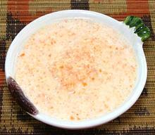

 |
Hot Chili ChutneyEast Africa, Tanzania - Achali ya Pilipili | ||||
| Makes: Effort: Sched: DoAhead: |
1-1/4 cup ** 3 days Best |
This is the most famous chili recipe in Tanzania, and it is blazing hot! Do not attempt to serve to folks from the Frozen North. | |||
|
12 3 1 2 1/2 3 2 |
lrg cl in T t T T |
Habaneros (1) Garlic Ginger Root Lemon Juice Salt Olive Oil Water |
Make - (25 min - plus aging to 3 days)
|